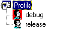

Un profil regroupe un ensemble de paramètres relatifs au projet.
A un moment donné, Xwin utilise un seul profil, appelé "profil courant". Ce profil apparaît en rouge dans l'arbre du projet.

Le choix d'un profil permet de sélectionner d'un seul coup plusieurs options du projet.
Le profil permet de paramétrer :
les chemins implicites qui sont chargés lors de la sélection du profil.
le répertoire où sont placés les objets,
le répertoire où sont placés les fichiers de navigation,
le répertoire où sont placés les fichiers de couverture du code,
les options de compilation (mode Debug, version cible, Génération des informations de navigation),
les autres options pour le compilateur Diva,
une option permettant de demander la fermeture des sources ouverts lors d'un changement de sous-projet.
les paramètres de compilation conditionnelle (/VALUE),
des constantes du langage Diva.
Le choix du profil courant peut être automatique. Pour cela, il faut sélectionner le choix Ce profil par défaut du menu contextuel du profil.
Paramètres par défaut
Lors de la création d'un projet et de ses profils vous pouvez saisir des paramètres par défaut pour les profils. Ceci pour vous éviter de saisir les mêmes informations pour les différents profils.
Les paramètres par défaut sont donc facultatifs au niveau des profils. Ces paramètres sont :
les chemins implicites qui sont chargés lors de la sélection du profil,
le répertoire où sont placés les objets,
le répertoire où sont placés les fichiers de navigation,
le répertoire où sont placés les fichiers de couverture du code,
les options pour le compilateur Diva (autres que Debug, Informations de navigation et Version cible),
les paramètres de compilation conditionnelle (/VALUE),
les constantes Diva.
Remarque
Tous les fichiers placés dans les dossiers du projet doivent être accessibles par les chemins implicites de la tâche.
Voir également :